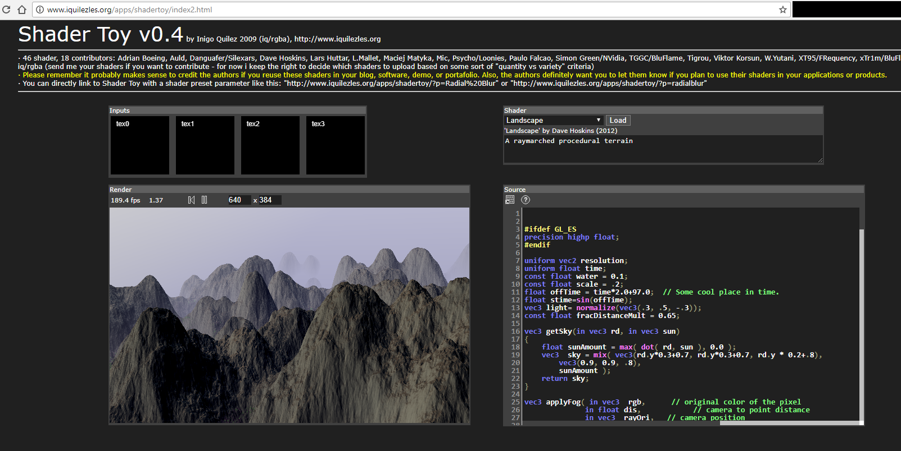

This is a sample raymarched terrain generated by Inigo Quilez, the creator of Shader Toy.
When I was at SIGGRAPH earlier this year, I had the opportunity to meet him and watch a
presentation hosted by the Khronos Group regarding developments in WebGL. I'm very fond
of procedurally generated terrain - I've been writing procedural 3D environment generators
since middle school. The technique employed here involves generating weighted 3D perlin noise
and then ray-marching from the camera through the space until it hits the terrain and
painting it on the screen. This is a common technique employed in generating 3D volumetric
clouds, where the math (in particularly for lighting the cloud with diffusion and various
other volumetric effects) is more complicated. This is an effect that works in screenspace,
but generates and emultes 3D volumetric space. It just doesn't use conventional VBOs to
get there. It's a nice effect, but runs poorly on my computer.